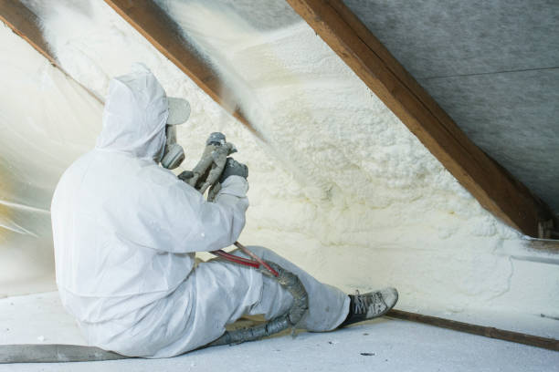
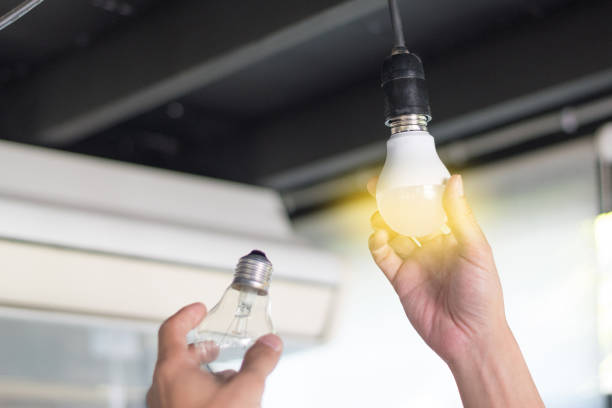
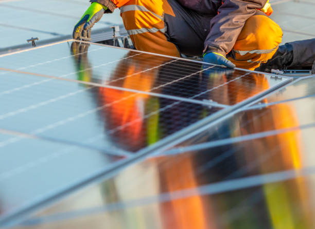
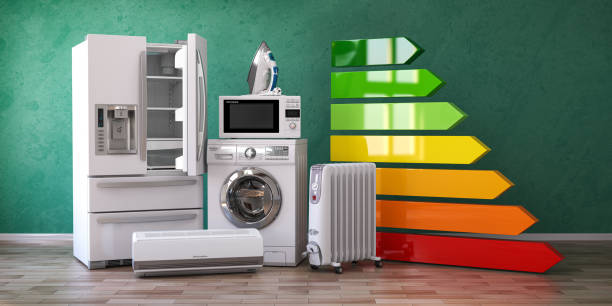
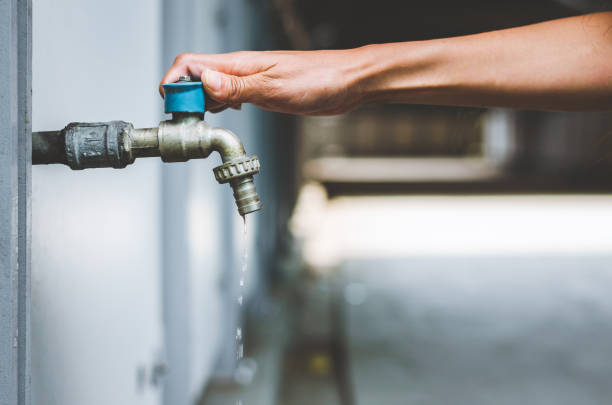
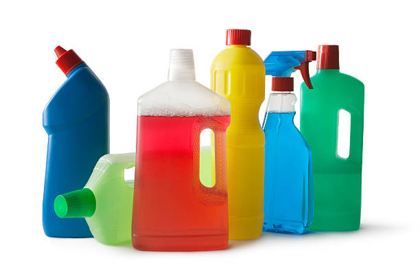
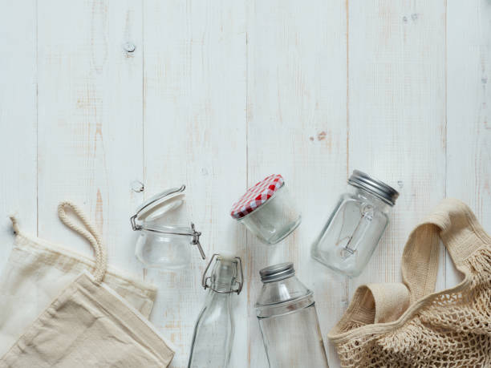
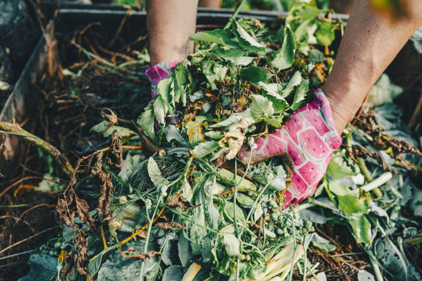
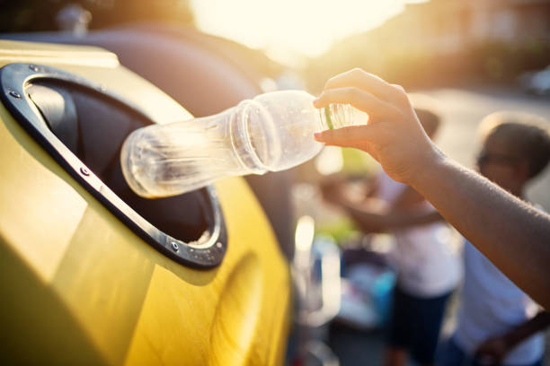

Aisla tu hogar para reducir la pérdida de energía
El aislamiento del hogar es una forma efectiva de reducir la pérdida de energía y disminuir la cantidad de emisiones de gases de efecto invernadero. La mayoría de los hogares pierden energía a través de puertas y ventanas mal selladas, lo que aumenta la cantidad de energía que se necesita para mantener el hogar caliente en invierno y fresco en verano. Para reducir la pérdida de energía, puedes sellar las puertas y ventanas, mejorar el aislamiento en el techo y las paredes, y usar cortinas térmicas. Estas medidas no solo disminuyen tu huella de carbono, sino que también ahorran dinero en tus facturas de energía.

Cambia a bombillas LED

Las bombillas LED son una opción más sostenible que las bombillas incandescentes y fluorescentes. Aunque pueden ser más caras, duran mucho más y consumen menos energía, lo que las hace más rentables a largo plazo. Las bombillas LED pueden reducir tus facturas de energía y disminuir la cantidad de residuos que producen las bombillas. Además, las bombillas LED no contienen mercurio, lo que las hace más seguras para el medio ambiente.
Instala paneles solares
Los paneles solares son una excelente opción para reducir tu huella de carbono y disminuir tu dependencia de la red eléctrica. Al instalar paneles solares, puedes generar tu propia energía limpia y renovable, lo que te permite reducir tus facturas de energía y contribuir a la lucha contra el cambio climático. Los paneles solares no solo son sostenibles, sino que también pueden aumentar el valor de tu hogar y ofrecerte un retorno de inversión a largo plazo.

Usa electrodomésticos eficientes

Los electrodomésticos pueden ser uno de los mayores consumidores de energía en el hogar. Al optar por electrodomésticos eficientes en términos de energía, puedes reducir la cantidad de energía que utilizas y ahorrar dinero en tus facturas. Algunos electrodomésticos eficientes en términos de energía incluyen lavadoras, secadoras, refrigeradores y lavavajillas. Los electrodomésticos eficientes no solo reducen la cantidad de energía que utilizas, sino que también pueden tener una vida útil más larga que los electrodomésticos convencionales.
Reduce el consumo de agua
El agua es un recurso escaso y valioso, por lo que es importante reducir su consumo siempre que sea posible. Algunas formas de hacerlo incluyen arreglar las fugas de agua, reducir la cantidad de agua utilizada en la ducha y al lavar los platos, y recolectar agua de lluvia para regar las plantas. Reducir el consumo de agua no solo es sostenible, sino que también puede ahorrar dinero en tus facturas de agua.

Usa productos de limpieza ecológicos

Los productos de limpieza convencionales pueden ser tóxicos y dañinos para el medio ambiente. Al optar por productos de limpieza ecológicos, puedes reducir la cantidad de químicos nocivos que se liberan en el aire y en el agua, lo que ayuda a proteger la salud de tu familia y el medio ambiente. Puedes encontrar productos de limpieza ecológicos en tiendas especializadas, o incluso puedes hacer tus propios productos caseros utilizando ingredientes naturales como vinagre, bicarbonato de sodio y limón.
Compra productos sostenibles
Al comprar productos para tu hogar, elige opciones sostenibles y ecológicas. Busca productos que estén hechos con materiales reciclados o renovables, y que tengan un menor impacto ambiental en su producción y transporte. También puedes elegir productos que sean duraderos y que puedan ser reparados en lugar de ser desechados. Al optar por productos sostenibles, estás contribuyendo a la reducción de residuos y a la conservación de los recursos naturales.

Recicla y compostea

El reciclaje y la compostera son formas efectivas de reducir la cantidad de residuos que terminan en los vertederos. Al reciclar y compostear, puedes reducir tu huella de carbono y contribuir a la conservación del medio ambiente.
Reduce el consumo de carne
La producción de carne es una de las principales fuentes de emisiones de gases de efecto invernadero. Al reducir tu consumo de carne, puedes disminuir tu huella de carbono y contribuir a la conservación de los recursos naturales. Puedes optar por comidas vegetarianas o veganas en algunos días de la semana, o comprar carne de origen local y sostenible cuando decidas comer carne.

Implementa el reciclaje y compostaje

El reciclaje y compostaje son formas efectivas de reducir la cantidad de residuos que terminan en los vertederos y disminuir la huella de carbono del hogar. Al reciclar, puedes transformar materiales como papel, vidrio, plástico y metal en nuevos productos, reduciendo la necesidad de producir nuevos materiales. El compostaje te permite convertir los residuos de comida y jardín en abono para plantas, lo que reduce la necesidad de utilizar fertilizantes químicos. Asegúrate de seguir las reglas de reciclaje y compostaje de tu comunidad y anima a tu familia y amigos a seguir estas prácticas sostenibles.